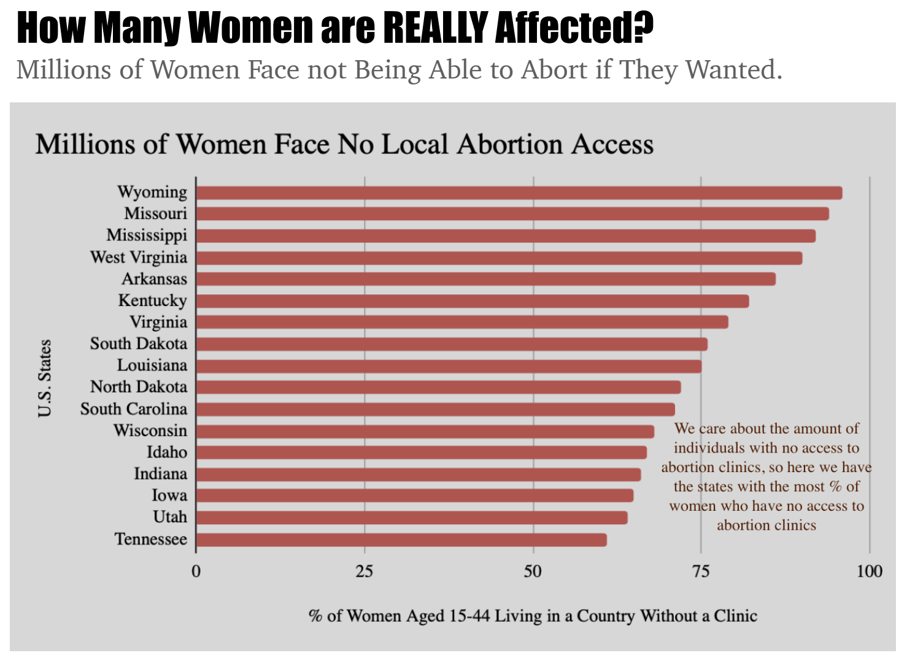
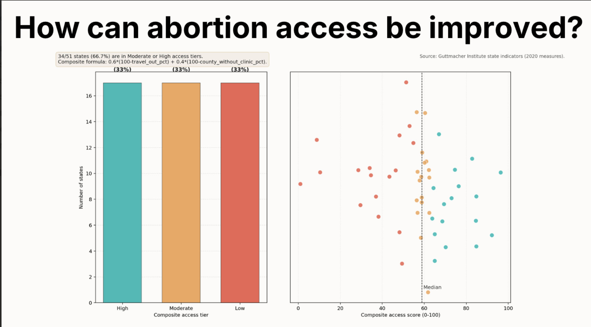

Proposition: Access to abortion services is severely limited in the United States.
FOR the Proposition

Design Decisions and Rationale:
- The chart only includes data from states with many counties that do not have an abortion clinic. Excluding states with higher amounts of counties with clinics makes it seem like the problem is much more severe nationwide. This design achieves this through getting rid of counterexamples and compressing the visible data to just states that are the most "extreme" examples in the nation of abortion services unavailability. (Score: -2)
- For the color of the bars, a deep red was chosen to evoke a sense of urgency and severity in the lack of access to abortion services in these states. This design achieves this because a deep red color is strongly associated with danger and negative conditions, adding emotional weight and a sense of "crisis" to the visualization. (Score: -1)
- Order of the bars sorted from highest to lowest percentage of women aged 15-44 years old without an abortion clinic in their county. Ordering the bars in this way causes viewers to see the highest severity of unavailability of abortion services first. Seeing the most severe examples first coaxes viewers into seeing the rest of the data with a lense that the unavailability of abortion services is much more severe than it actually is. (Score: -0.5)
AGAINST the Proposition

Design Decisions and Rationale:
- RATIONALE_1
- RATIONALE_2
- RATIONALE_3
Final Reflection
Designing two visualizations that argue opposing stances of the same proposition, given the same exact dataset, reveals how much visualization and data transformation techniques goes into crafting a visual argument. Straightforward parts of the visualization design process included what columns to focus on to craft our arguments, while the majority of effort in the process was dedicated towards coming up with design decisions that would sway viewers towards respective arguments. Surprising things learned in this project was how small - and often, unnoticeable - design decisions like data ordering, color choice, and data filtering significantly alter the way a visualization is perceived. For example, in Figure 1, design choices such as ordering of the bars from highest to lowest and using a deep red color for the bars were influential design choices that we would not immediately notice as a viewer. However, as visualization designers, we are completely aware of how a deep red color can generate a sentiment of urgency and severity, and ordering the most severe cases first can instill a primary notion that abortion services are more limited than they actually are. Overall, the design process taught that data representation is a method of framing a narrative crafted by intentional aggregations, filters, and numerous other design choices.
After this project, we currently view "ethical analysis and visualization" as an ambiguous concept, less about strict rules to enforce a level of transparency, and more about the intent behind design choices. As part of the assignment, we were required to score the "deceptiveness" or "transparency" of certain design choices. We concluded that "misleading" or "deceptive" design choices that are not completely ethical are design choices that mask or hide the data set. This includes design choices such as filtering out counterexamples in data (in our case filtering out states with high access to abortion services in respective counties) to emphasize your stance. Intentional decisions to hide data, filter out counterexamples, or falsify values are all "deceptive" and unethical design choices because not only do they lack transparency, but they completely misrepresent the data.